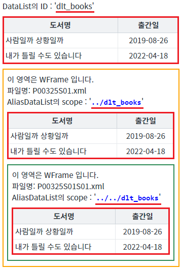
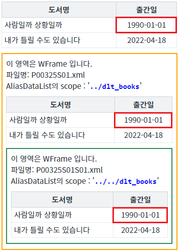
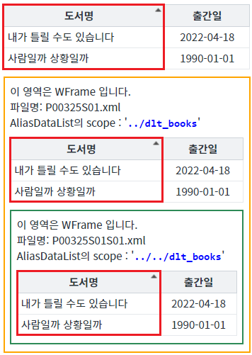
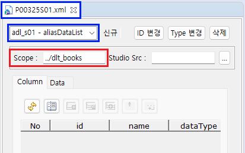
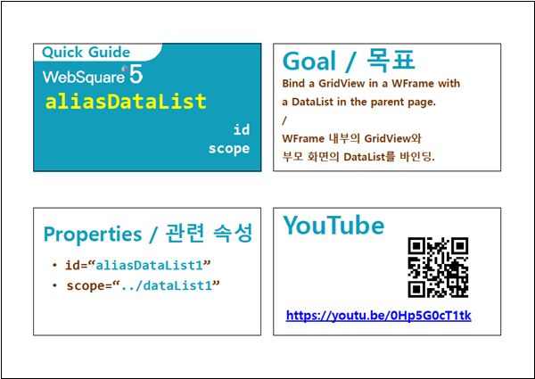

AliasDataList의 동작 방식을 확인할 수 있는 예제로 속성 'scope' 적용 예제입니다. 속성 'scope'에 상위(부모, 조상)의 DataList의 경로를 지정하면, 상위 DataList가 링크됩니다.
이 기능은 Sope이 적용된 경우만 동작합니다. 예를 들면 IFrame으로 구성된 화면에서 부모의 DataList는 연결되지 않습니다.
WFrame 화면의 AliasDataList를 상위(부모 또는 조상) 화면의 DataList와 링크하기
각 버튼을 클릭하여 각 영역에 구성된 GridView의 데이터를 확인합니다.
STEP 1. 초기 상태를 확인합니다.
각 예시 영역에 GridView가 구성되어있고, WFrame 영역의 GridView는 AliasDataList와 연결되어 있습니다. WFrame의 AliasDataList는 상위(부모, 조상) 화면의 DataList가 scope으로 지정되어 있습니다.
그림 1.브라우저(Chrome) 실행 예시

STEP 2. 상위 화면의 DataList의 셀 데이터를 변경합니다.
버튼 DataList의 첫 번째 행의 '출간일' 열의 셀 값 변경하기를 클릭합니다.STEP 3. 실행된 결과를 확인합니다.
상위 화면 DataList 'dlt_books'의 첫 번째 행의 '출간일' 셀의 값을 '19900101'으로 할당합니다. 각 영역 GridView의 첫 번째 행의 '출간일' 셀의 값이 '1990-01-01'으로 변경됩니다.
그림 2.브라우저(Chrome) 실행 예시

STEP 4. 상위 화면의 DataList의 '도서명'을 오름차순으로 정렬합니다.
버튼 DataList의 '도서명'을 오름차순으로 정렬하기를 클릭합니다.STEP 5. 실행된 결과를 확인합니다.
각 영역 GridView의 헤더 컬럼 '도서명'에 오차순 정렬 이미지가 표시되고, 데이터가 오름차순으로 정렬됩니다.
그림 3.브라우저(Chrome) 실행 예시

AliasDataList의 'scpoe'에 지정할 수 있는 DataList는 상위(부모, 조상) 화면에 가능합니다. 형제(sibling) 화면은 지원하지 않습니다.
STEP1. AliasDataList의 속성을 정의합니다.
[필수] scope="DataList의 경로"
작성 예시 1) (상대 경로) 부모 화면의 DataList 'dlt_books'
scope="../dlt_books"
작성 예시 2) (상대 경로) 부모의 부모 화면의 DataList 'dataList1_main1'
scope="../../dataList1_main1"
작성 예시 3) (절대 경로) 최상위 화면의 DataList 'dataList1_main2'
scope="/dataList1_main2"
작성 예시 4) (절대 경로) 최상위 화면의 WFrame 'wframe1' 화면의 DataList 'dataList1_wframe1'
scope="/wframe1/dataList1_wframe1"
그림 4.웹스퀘어5 SP5 스튜디오의 에디터 탭 [DataCollection] 예

소스 코드
<!-- 예제 파일 'P00325S01.xml', 'P00325S01S01.xml'에서도 확인할 수 있습니다 --> <w2:aliasDataList scope="../dlt_books" id="adl_s01"></w2:aliasDataList>
scope
setScope( scope )
[웹스퀘어5 SP5 개발 가이드] AliasDataCollection
링크 : https://docs1.inswave.com/sp5_user_guide/9b0b19a2d21a2132
AliasDataList의 scope 적용
링크 : https://www.youtube.com/embed/0Hp5G0cT1tk
